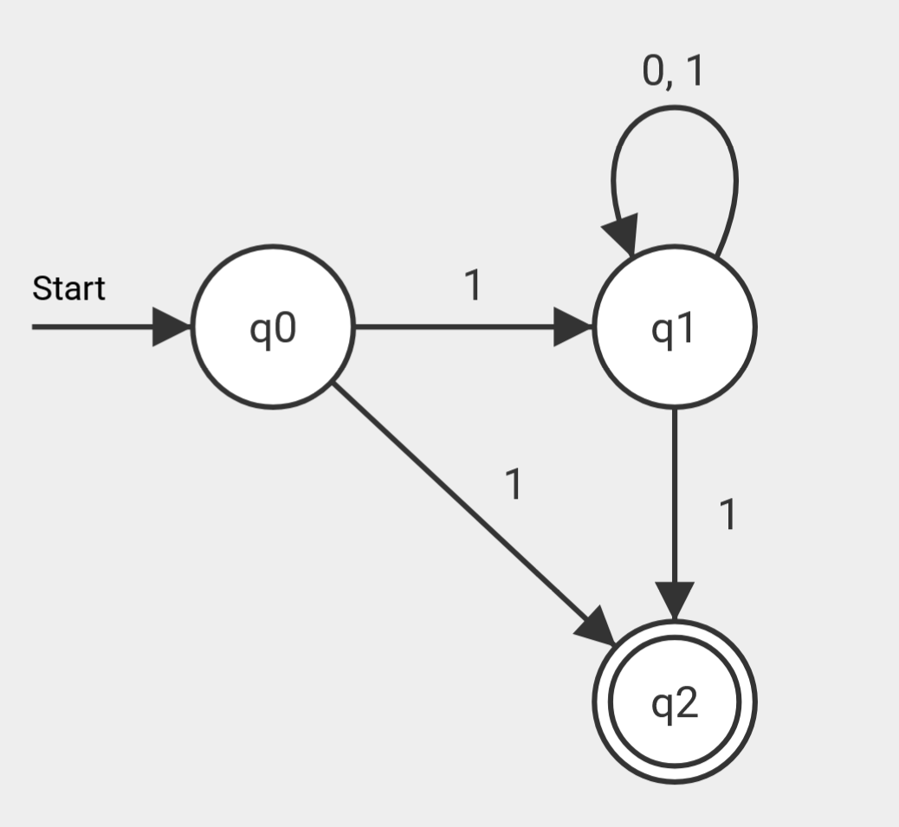

In der Informatik verwendest du Automaten als theoretische Modelle, um Berechnungen und Sprachverarbeitung zu beschreiben. Stelle dir einen Automaten wie eine Maschine vor, die Eingaben verarbeitet und nach festen Regeln entscheidet, ob sie eine Eingabe akzeptiert. Es gibt verschiedene Arten von Automaten, die sich in ihrer Leistungsfähigkeit unterscheiden.
Ein DEA ist der einfachste Typ von Automat. Stelle dir einen DEA wie ein Flussdiagramm vor, bei dem du von einem Startpunkt aus, abhängig von der Eingabe, eindeutig von einem Zustand zum nächsten gelangst.
Formale Definition: Ein DEA ist ein 5-Tupel (Q, Σ, δ, q0, F), wobei
Q: eine endliche Menge von Zuständen (z. B. q0, q1, q2),
Σ: das Eingabealphabet (z. B. {0, 1} für Binärzahlen),
δ: Q × Σ → Q die Übergangsfunktion,
q0: der Startzustand (ein Element aus Q),
F: die Menge der akzeptierenden Endzustände (eine Teilmenge von Q).
2. Nichtdeterministischer endlicher Automat (NEA)
Ein NEA ist ähnlich wie ein DEA, aber er kann für eine Eingabe in einem Zustand mehrere mögliche Folgezustände haben – oder auch keinen. Stelle dir vor, der Automat kann sich „aufteilen“ und mehrere Wege gleichzeitig verfolgen, oder er „rät“ immer den richtigen Weg.
Formale Definition: Ein NEA ist ein 5-Tupel (Q, Σ, δ, q0, F), wobei
Q, Σ, q0 und F: wie beim DEA,
δ: Q × Σ → 𝒫(Q) (Die Übergangsfunktion bildet auf die Potenzmenge von Q ab, d. h., sie liefert eine Menge möglicher Folgezustände, eventuell die leere Menge ∅.)
Beispiel 1 einfach
Ausgangssituation: NEA über {a, b} für alle Wörter, die auf ab enden: q0 hat Schleifen für a und b, zusätzlich q0 –a→ q1, q1 –b→ q2, q2 ist Endzustand.
Wort aab, Mengen der erreichbaren Zustände: {q0} –a→ {q0, q1} –a→ {q0, q1} –b→ {q0, q2}. Die Menge enthält q2, also wird aab akzeptiert. Ein akzeptierender Weg ist q0 –a→ q0 –a→ q1 –b→ q2. Der Weg q0 → q1 → ? bleibt dagegen nach dem zweiten a stecken – das ist erlaubt, es genügt ein erfolgreicher Weg.
Start: M = {q0}. Warum? Vor dem ersten Zeichen ist nur der Startzustand möglich.
a lesen: q0 –a→ q0 und q0 –a→ q1, also M = {q0, q1}. Warum? Der NEA verfolgt beide Möglichkeiten gleichzeitig.
a lesen: aus q0 wieder {q0, q1}, aus q1 gibt es kein a (Beitrag ∅), also M = {q0, q1}. Warum? Ein Weg, der steckenbleibt, fällt einfach weg.
b lesen: aus q0 nach q0, aus q1 nach q2, also M = {q0, q2}.
Entscheidung: q2 ∈ M, also gibt es mindestens einen akzeptierenden Weg.
Ergebnis:aab wird akzeptiert.
Kontrolle:aba: {q0} –a→ {q0, q1} –b→ {q0, q2} –a→ {q0, q1}. Am Ende fehlt q2 → verworfen, obwohl unterwegs q2 erreicht wurde.
Vergleiche mit dem DEA für dieselbe Sprache in Kapitel 6.7: Der NEA ist leichter zu entwerfen, weil er nur „raten“ muss, wo das Ende beginnt.
ε-Übergänge (ε-NEA)
Ein ε-NEA darf zusätzlich Übergänge mit der Beschriftung ε besitzen. Über einen ε-Übergang wechselt der Automat den Zustand, ohne ein Zeichen zu lesen. Die Übergangsfunktion ist dann δ: Q × (Σ ∪ {ε}) → 𝒫(Q).
Beispiel 2 komplex
Ausgangssituation: ε-NEA für a*b*: q0 hat eine Schleife für a, q0 –ε→ q1, q1 hat eine Schleife für b, q1 ist Endzustand.
Start: ε-Hülle({q0}) = {q0, q1} – also wird schon ε akzeptiert.
Hülle vor dem ersten Zeichen: {q0} wird zu {q0, q1} erweitert. Warum? Der Automat darf über ε nach q1 wechseln, ohne etwas zu lesen. Wer diesen Schritt vergisst, verwirft fälschlich ε und alle Wörter aus nur b.
Zeichen lesen: Für jeden Zustand der Menge die Übergänge mit dem gelesenen Zeichen ausführen und die Ergebnisse vereinigen. Bei aab, erstes a: q0 → q0, q1 hat kein a → {q0}.
Hülle nach jedem Zeichen: {q0} → {q0, q1}. Warum? Nach dem a dürfen sofort b folgen, dafür muss q1 wieder erreichbar sein.
Die Falle bei ba: Nach dem b ist nur noch q1 möglich; von q1 führt kein ε-Übergang zurück nach q0. Ein a nach einem b ist deshalb nicht mehr lesbar – die Menge wird leer.
Ergebnis: ε und aab werden akzeptiert, ba wird verworfen – genau wie es der Ausdruck a*b* verlangt.
Kontrolle:bb: {q0, q1} –b→ {q1} –b→ {q1} ✓ – ohne die Start-Hülle wäre dieses Wort fälschlich verworfen worden.
ε-Übergänge machen es leicht, Automaten für Teilausdrücke „hintereinanderzuschalten“. Genau so übersetzen Regex-Bibliotheken einen regulären Ausdruck in einen Automaten (Thompson-Konstruktion).
Hinweis: NEA in DEA umwandeln
Du kannst jeden NEA (auch mit ε-Übergängen) in einen äquivalenten DEA umwandeln. Der resultierende DEA kann jedoch exponentiell mehr Zustände haben (bis zu 2|Q|). Das Verfahren heißt Potenzmengenkonstruktion und wird in Kapitel 6.10 behandelt.
Praxisbezug: NEA in Regex-Engines und Lexer-Generatoren
Alltag: Wenn du in einem Editor (VS Code, Notepad++) oder mit grep nach einem regulären Ausdruck wie colou?r suchst, wird der Ausdruck zuerst in einen NEA mit ε-Übergängen übersetzt und dann simuliert oder in einen DEA umgewandelt.
Beruf: Lexer-Generatoren wie flex oder die Lexer-Stufe von ANTLR erzeugen aus den regulären Ausdrücken aller Token einen ε-NEA, wandeln ihn per Potenzmengenkonstruktion in einen DEA um und minimieren ihn. Softwareentwicklerinnen in Sicherheitsfirmen setzen dasselbe Prinzip in Intrusion-Detection-Systemen ein, die Netzwerkverkehr in Echtzeit nach tausenden Angriffsmustern durchsuchen.
3. Weitere Automatentypen
Neben endlichen Automaten werden in der Informatik weitere Modelle betrachtet, die unterschiedliche Arten von Sprachen bzw. Problemen erfassen.
Weitere Automatentypen
Kellerautomat
Ein Kellerautomat erweitert den endlichen Automaten um einen Stapelspeicher (Keller). Stelle dir einen Kellner vor, der Teller stapelt und immer nur den obersten Teller sehen und nehmen kann (LIFO – last in, first out).
Formale Definition: Ein Kellerautomat ist ein 7-Tupel (Q, Σ, Γ, δ, q0, Z0, F), wobei
Q, Σ, q0 und F: wie beim DEA,
Γ: das Kelleralphabet (Symbole, die du auf den Keller legen kannst),
δ: Q × (Σ ∪ {ε}) × Γ → 𝒫(Q × Γ*) (Die Übergangsfunktion berücksichtigt den aktuellen Zustand, die Eingabe – oder ε für einen Übergang ohne Lesen – und das oberste Kellersymbol.),
Z0: das Startsymbol im Keller.
Linear beschränkter Automat (LBA)
Ein LBA ist eine nichtdeterministische Turingmaschine, deren Kopf den Bereich der Eingabe nicht verlassen darf. Sie kann also lesen, schreiben und sich in beide Richtungen bewegen, hat aber nur so viel Platz, wie die Eingabe lang ist. LBAs erkennen genau die kontextsensitiven Sprachen.
Turingmaschine
Eine Turingmaschine ist das mächtigste Automatenmodell. Stelle dir ein unendlich langes Band vor, auf dem du lesen, schreiben und dich in beide Richtungen bewegen kannst.
Formale Definition: Eine Turingmaschine ist ein 7-Tupel (Q, Σ, Γ, δ, q0, b, F), wobei
Q, Σ, q0 und F: wie beim DEA,
Γ: das Bandalphabet (enthält alle Symbole, die auf dem Band vorkommen können, einschließlich Σ und b),
δ: Q × Γ → Q × Γ × {L, R} (Die Übergangsfunktion legt fest, in welchen Zustand übergegangen wird, welches Symbol geschrieben wird und ob der Lese-/Schreibkopf nach links (L) oder rechts (R) bewegt wird.),
b: das Leersymbol (für unbeschriebene Bandabschnitte).
Registermaschine
Eine Registermaschine arbeitet mit einer endlichen Anzahl von Registern, die beliebig große natürliche Zahlen speichern können. Stelle dir eine Rechenmaschine mit mehreren Zählern vor.
Formale Definition (vereinfacht): Eine Registermaschine ist ein 4-Tupel (Q, R, δ, q0), wobei
Q: die Menge der Zustände bzw. Programmzeilen,
R: die Menge der Register,
δ: Q → (Q × Operation) ∪ {HALT} (Die Übergangsfunktion gibt den nächsten Zustand und die auszuführende Operation an oder beendet die Berechnung),
q0: der Startzustand.
Merke:
Die Automatentypen unterscheiden sich in ihrer Mächtigkeit:
DEA = NEA < Kellerautomat < linear beschränkter Automat < Turingmaschine = Registermaschine.
Diese Hierarchie entspricht den Sprachklassen in der Chomsky-Hierarchie.
Bezug zur Chomsky-Hierarchie
Die Chomsky-Hierarchie, benannt nach dem Linguisten Noam Chomsky, klassifiziert formale Sprachen und Grammatiken in vier Typen. Jeder Automatentyp entspricht einer Sprachklasse in dieser Hierarchie:
Typ 3 (reguläre Sprachen): endliche Automaten (DEA/NEA)
Typ 2 (kontextfreie Sprachen): (nichtdeterministische) Kellerautomaten
Typ 1 (kontextsensitive Sprachen): linear beschränkte Automaten
Typ 0 (rekursiv aufzählbare Sprachen): Turingmaschinen
Einen Kellerautomaten Schritt für Schritt verfolgen
Den Ablauf eines Kellerautomaten beschreibt man mit Konfigurationen (Zustand, Resteingabe, Kellerinhalt); das oberste Kellersymbol steht links. Ein Rechenschritt wird mit ⊢ notiert. Der Automat akzeptiert, wenn er die Eingabe vollständig gelesen hat und in einem Endzustand ist.
Beispiel 3 Kellerautomat
Ausgangssituation: Ein Editor prüft, ob runde Klammern korrekt geschachtelt sind. Kellerautomat K = ({q0, qf}, {(, )}, {X, Z0}, δ, q0, Z0, {qf}) mit
δ(q0, (, Z0) = {(q0, XZ0)} und δ(q0, (, X) = {(q0, XX)} – für jede öffnende Klammer ein X auf den Keller legen,
δ(q0, ), X) = {(q0, ε)} – für jede schließende Klammer ein X entfernen,
δ(q0, ε, Z0) = {(qf, Z0)} – liegt nur noch Z0 im Keller, darf der Automat ohne Lesen in den Endzustand wechseln.
Konfigurationsfolge für (()()):
(q0, (()()), Z0) ⊢ (q0, ()()), XZ0) – erste ( gelesen, X auf Z0 gelegt.
⊢ (q0, )()), XXZ0) – zweite ( gelesen; der Keller zählt jetzt zwei offene Klammern.
⊢ (q0, ()), XZ0) – ) gelesen, oberstes X entfernt. Warum? Diese Klammer schließt die zuletzt geöffnete (LIFO).
⊢ (q0, )), XXZ0) ⊢ (q0, ), XZ0) ⊢ (q0, ε, Z0) – nach den restlichen drei Zeichen liegt nur noch Z0 im Keller.
⊢ (qf, ε, Z0) – ε-Übergang in den Endzustand. Eingabe gelesen, Zustand qf → akzeptiert.
Die Fallen:
()): (q0, ()), Z0) ⊢ (q0, )), XZ0) ⊢ (q0, ), Z0). Für ) mit Z0 oben gibt es keinen Übergang. Der ε-Übergang nach qf hilft nicht, denn danach ist die Eingabe noch nicht gelesen → verworfen (zu viele schließende Klammern).
((: (q0, ((, Z0) ⊢ (q0, (, XZ0) ⊢ (q0, ε, XXZ0). Oben liegt X, der Wechsel nach qf ist nicht möglich → verworfen (Klammern nicht geschlossen).
Bei ()() liegt schon nach () nur Z0 im Keller. Der Automat könnte jetzt nach qf wechseln, bliebe dort aber mit Resteingabe stecken. Wie beim NEA genügt es, dass ein Weg – hier: in q0 weiterlesen – akzeptiert.
Ergebnis: Der Keller speichert, wie viele Klammern offen sind – und zwar beliebig viele. Genau das kann ein endlicher Automat nicht.
Das Wichtigste
Merke: Bei einem DEA gibt es für jede Eingabe in jedem Zustand genau einen Folgezustand. Jedes Wort hat daher genau einen Berechnungsweg.
Merke: Akzeptanz beim NEA
Ein NEA akzeptiert ein Wort w, wenn es mindestens einen Berechnungsweg gibt, der w vollständig liest und in einem Endzustand endet.
Er verwirft w, wenn alle möglichen Wege entweder steckenbleiben (kein Übergang vorhanden) oder nach dem letzten Zeichen in einem Nicht-Endzustand enden.
Praktisch prüft man das, indem man Zeichen für Zeichen die Menge aller erreichbaren Zustände mitführt: w wird akzeptiert, wenn diese Menge am Ende einen Endzustand enthält.
Merke: Die ε-Hülle eines Zustands q ist die Menge aller Zustände, die von q aus allein über ε-Übergänge erreichbar sind (q selbst eingeschlossen). Beim Prüfen eines Wortes bildet man nach jedem Schritt – und schon vor dem ersten Zeichen – die ε-Hülle der erreichten Zustände. ε-NEA, NEA und DEA erkennen genau dieselbe Sprachklasse: die regulären Sprachen.
Grundaufgaben
Aufgabe 6.9.1: AFB I/II
Beschreibe, was dieser Automat macht, und erkläre, warum es sich um einen NEA handelt.

Abb. 1: NEA
Aufgabe 6.9.2: AFB II
Entwirf einen einfachen DEA, der Binärzahlen akzeptiert, die durch 3 teilbar sind. Zeichne das Zustandsdiagramm und gib die formale Definition als 5-Tupel an.
Hinweis: Führende Nullen sind erlaubt. Das leere Wort und die 0 stehen für den Wert 0 und werden akzeptiert, weil 0 durch 3 teilbar ist.